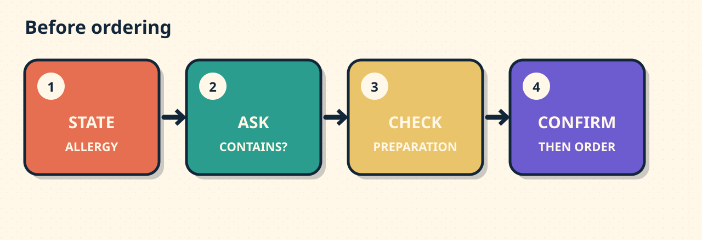

1 / SITUATION
You have a peanut allergy.
You want vegetable curry. What should you say?
2 / CHOOSE
Which opening is clear?
A. No peanuts.
B. I have a peanut allergy. Does this curry contain peanuts?
C. I do not like peanuts.
3 / EXPLAIN
State. Ask. Check.

4 / TRY
You have an egg allergy.
Ask whether the salad dressing contains egg. Ask staff to check preparation.